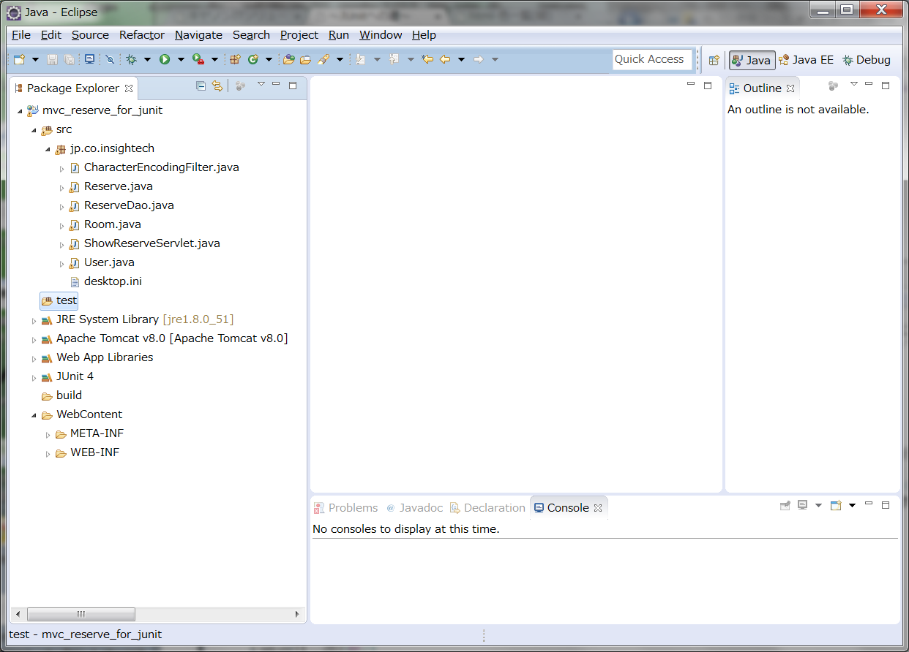

MVC施設予約の単体テスト
MVC施設予約の単体テスト
JUnitの使い方について、ひととおりの知識を得ました。
それでは、実際のWebアプリケーションに対して JUnit をどのように適用していくのかを見ていきましょう。
テスト対象とするアプリケーションは次のような仕様の施設予約アプリケーションです。
施設予約の仕様
ここでは、下記の作成途中のMVC施設予約を元にして、単体テストを作成していきます。
mvc_reserve_for_junit
施設予約の Eclipse への導入
まずは、このMVC施設予約を、Eclipse へ導入します。
Eclipseの「MVC掲示板を動かす」を参考にしてください。
次に、JUnitをクラスパスに追加し、テスト用のソースフォルダを「test」として作成します。
やり方を忘れてしまった人は「JUnit の使い方」を参考にしてください
導入されたプロジェクトは以下のようになりました。
（JUnit のライブラリと test フォルダが追加されています。）

このプロジェクトはまだ未完成で、JSP や web.xml などは手付かずの状態です。
ですから、Tomcat を起動してもアプリケーションとしては動作しないかもしれません。
しかし、このような状態でも単体テストは実施できます。
むしろ、「単体テスト」ですので、画面に頼らずにできなくてはいけません。
それでは、MVC施設予約の単体テストを始めることにしましょう。
単体テストの手順
まずどこから手をつけていけばよいのでしょうか。
目に付く限りのテストできそうなメソッドを探して、JUnit のテストクラスを作成していけばよいのでしょうか。
今までの、MVC掲示板などの開発は、
コーディングを行いながらWebアプリケーションを動かして動作確認、という手順で実装を進め、
おおよその仕様どおりに動くようになったら終了、という開発を行ってきました。
目視による動作確認はテスト作業の一環であり、基本的で誰でも思いつく大切なテストですが、
「どのような動作確認をしたのですか？」と聞かれた場合や、
「前回実施したテストを再度、全く同じ手順で実施してください。」といわれた場合に、
直感とその場の判断で行ったテストでは、後々困ったことになるという気がしているのではないでしょうか。
単体テストに限らず、どのテストでも同じなのですが、
テストする内容やテストの条件を明確にし、繰り返し何度でも同じ手順のテストを実施できるようにする必要があります。
今回は、
- 単体テスト仕様書を作成し、テスト項目を明確にする。
- 単体テストを JUnit で実装し、自動的に何度でもテストを実施できるようにする。
という２つの手順を踏んで単体テストを行っていくことにします。
©日本インサイトテクノロジー株式会社